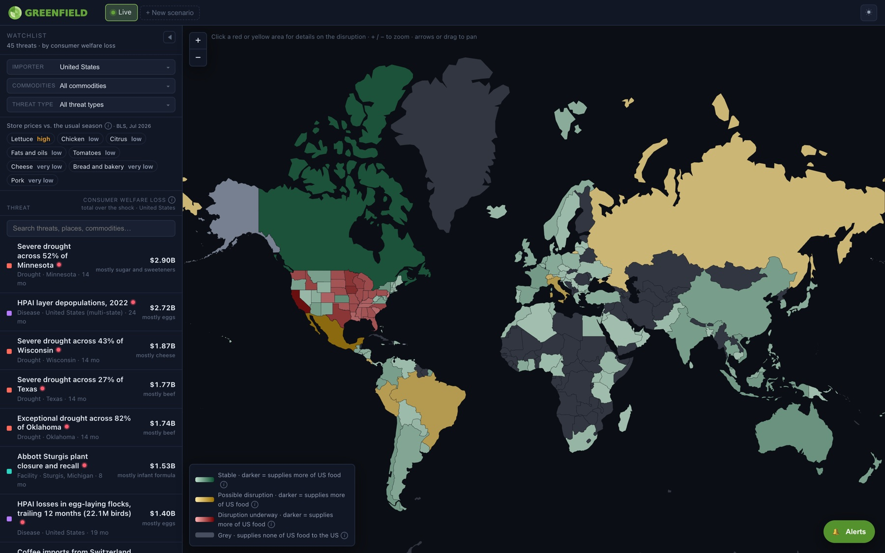
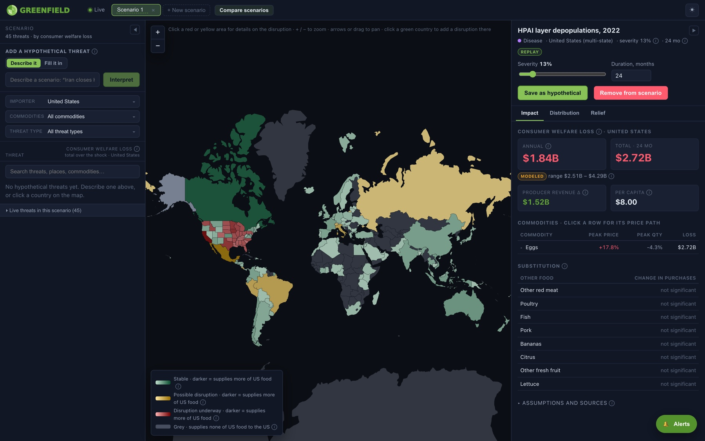
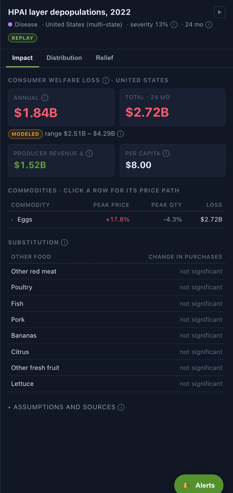

Security & trust
Runs entirely on public data — no PII, no sensitive records. That clears the single biggest barrier to government adoption: routing confidential information through an outside tool.
Agricultural intelligence in context
For six decades the United States ran an agricultural trade surplus. In 2025 it flipped to a record deficit. What households pay for coffee, chocolate, produce, and beef is increasingly set in São Paulo, Abidjan, and Sinaloa, not Iowa.
Yet a staffer still learns about a Brazilian frost or a cocoa blight from the news — or worse, from industry summaries. Greenfield gives policymakers the instrument instead: every disruption to the American food supply, ranked by what it costs the people they represent.
Source: USDA Economic Research Service
Largest origins, all tracked food
01 / The product
Regular briefings link to real, data-driven coverage of what's happening. Developments are put in the context of existing American food security, and ordered by the severity of their impact on American consumers.
On the machine's role An LLM may propose, never decide. Candidates are drawn from a fixed vocabulary, and a rule-based validator is the last word before anything reaches the model.

02 / Data analysis
Greenfield interprets global developments for the federal, state, and district level, providing insight for every constituency and letting policymakers craft finely tailored solutions.
Why districts, not population A shock to citrus and a shock to corn land on entirely different maps. District exposure comes from county agricultural production, not from headcount.
03 / Simulator
Imagine novel shocks and watch an agent bring them to life. Set the severity, the duration, and the relief on the table, and scope the magnitude of the crisis — before it hits.
One legible dial Severity is a fraction of the affected channel: on an import threat, the share of that origin's shipments that stop; on a domestic one, the share of the region's output; on a tariff, the ad valorem rate.

The method
One dial goes in. Four steps later, a dollar figure comes out — and every step is a cited, inspectable, zero-dependency piece of TypeScript rather than a black box.
APHIS bird counts, Drought Monitor coverage, and Global Trade Alert tariff rates each convert to the same 0–100% dial at ingestion, so an alert level never gets mixed with a physical count.
Flock repopulation curves, marketing years, harvest calendars, import origin shares, and chokepoint rerouting turn one dial into a monthly quantity path. Weather cannot destroy a manufactured good at home; a hazard abroad cuts imports instead.
A 44-item unconditional elasticity matrix from ERS ERR-139 (Okrent & Alston 2012), symmetrized by precision-weighted Slutsky. Upstream inputs reach the shelf through ERS cost shares — a wheat drought raises bread through cost, it does not empty the bread aisle.
Path-independent across simultaneous price changes, so combined scenarios add up honestly. Reported per household, per income quintile, and per district, with producer revenue valued at the farm share of the retail price.
Every figure carries its provenance
Calibrated against events that already happened
The 2022 HPAI egg replay carries the actual BLS retail price through Dec 2023, and the modeled path is drawn over it. Where the literature disagrees by threefold on how much of the 2022 egg price rise HPAI caused, Greenfield shows both and labels which one is in use.
Nothing hidden behind the figure
Every panel ends in Assumptions and sources, and every feed reports whether it is live or serving a cached snapshot. A number a staffer cannot audit is a number a staffer cannot use.

Coverage
No black-box "AI-powered coverage." This is the complete list of what the model knows about, and where each piece of it comes from.
Priced as consumers meet them, in the units they buy.
Farm inputs never reach a shopping cart directly. They reach it through cost shares.
Four families, each with its own physical rule for turning severity into lost supply.
Biological
Natural
Geopolitical
Supply chain
Modeled on what the government actually reached for in 2022 and 2025, including how long each authority lasted.
Eggs · 2025
Infant formula · 2022
Any commodity
Every feed is public. Each caches to a committed snapshot, and a stale feed says so on the face of the terminal.
Beyond the hackathon
Public data, a live deployment, and four markets that can pay for it.
Runs entirely on public data — no PII, no sensitive records. That clears the single biggest barrier to government adoption: routing confidential information through an outside tool.
Not just Hill staff. Lobbying shops, trade associations, farmers, and consumers all use the same views, filtered by state, district, commodity, and type of disruption.
Public sources — USDA, Census, UN Comtrade, weather — are free to ingest. Commodity cloud hosting, and near-zero marginal cost per added user.
Already live on a hosted stack: this demo. Next step is scheduled data pipelines feeding a cached API behind the terminal.
No private data means no HIPAA, PII, or CUI exposure: standard SaaS terms and a far lighter procurement path than sensitive-data tools.
The weekly email is the wedge — it meets staffers where they already work and deep-links into the terminal. Organizations can embed views or pull the API.
Toward a company A free public tier for consumers and government; paid seats for trade associations, commodity groups, and agtech.
04 / Next steps
To build a happier, more prosperous society, policymakers should understand how their decisions affect everything Americans spend money on.
One terminal could integrate Greenfield's agricultural radar with the same treatment of energy, housing, technology, chemicals, and more — so that government action can be read in the prices real Americans pay.